Commit: df7dab87540d2d488e85221ada8cdc7304a9de2d
Fecha UTC: 2026-10-16T11:12:48.383512+00:00
Ejecuciones: EX-094, EX-107
Fuente: repositorio Menu08 y respuestas reales de las herramientas. Este informe es una representación de los registros; las capturas de aplicación aparecen al final.
Resultado esperado del caso
Se mantiene el contenido y los controles disponibles con adaptación al tamaño, sin texto ni acciones inaccesibles. Los colores responden a los tokens del proyecto en ambos temas. Registrar cualquier desborde o control inaccesible como defecto de presentación; no sustituir la prueba por una captura de otro ancho.
El número interno mide al menos 32 px y el botón al menos 56 px de alto; los números públicos se leen desde 3 metros en el monitor de 24 pulgadas. Esta lectura física no se sustituye por la emulación de ancho.
Pendiente:- Lectura de números públicos a 3 metros en monitor físico de 24 pulgadas pendiente; emular ancho no la sustituye.
Comparaciones ejecutadas
| Comprobación | Esperado | Obtenido | Resultado |
|---|
| /svp 360 False ancho | true | true | Cumple |
| /turnos/truck-de-pruebas 360 False ancho | true | true | Cumple |
| /svp 360 True ancho | true | true | Cumple |
| /turnos/truck-de-pruebas 360 True ancho | true | true | Cumple |
| /svp 768 False ancho | true | true | Cumple |
| /turnos/truck-de-pruebas 768 False ancho | true | true | Cumple |
| /svp 768 True ancho | true | true | Cumple |
| /turnos/truck-de-pruebas 768 True ancho | true | true | Cumple |
| /svp 1280 False ancho | true | true | Cumple |
| /turnos/truck-de-pruebas 1280 False ancho | true | true | Cumple |
| /svp 1280 True ancho | true | true | Cumple |
| /turnos/truck-de-pruebas 1280 True ancho | true | true | Cumple |
| Número mínimo 32px | true | true | Cumple |
| Botón mínimo 56px (redondeo a 0.01px) | true | true | Cumple |
| Altura mínima CSS | true | true | Cumple |
| /svp 360 False ancho | true | true | Cumple |
| /turnos/truck-de-pruebas 360 False ancho | true | true | Cumple |
| /svp 360 True ancho | true | true | Cumple |
| /turnos/truck-de-pruebas 360 True ancho | true | true | Cumple |
| /svp 768 False ancho | true | true | Cumple |
| /turnos/truck-de-pruebas 768 False ancho | true | true | Cumple |
| /svp 768 True ancho | true | true | Cumple |
| /turnos/truck-de-pruebas 768 True ancho | true | true | Cumple |
| /svp 1280 False ancho | true | true | Cumple |
| /turnos/truck-de-pruebas 1280 False ancho | true | true | Cumple |
| /svp 1280 True ancho | true | true | Cumple |
| /turnos/truck-de-pruebas 1280 True ancho | true | true | Cumple |
| Número mínimo 32px | true | true | Cumple |
| Botón mínimo 56px (redondeo a 0.01px) | true | true | Cumple |
| Altura mínima CSS | true | true | Cumple |
Notas de ejecución
- Navegador real automatizado en Linux; no equivale a un dispositivo Android físico.
- Número: 40 px; botón: 56 px. Geometría redondeada a 0.01px para la precisión de getBoundingClientRect; min-height CSS también se comprueba.
- Número: 40 px; botón: 55.999969482421875 px. Geometría redondeada a 0.01px para la precisión de getBoundingClientRect; min-height CSS también se comprueba.
Abrir registro JSON con respuestas HTTP y comprobaciones completas
Capturas originales de aplicación
CP-SVP-19-chromium-svp-360-claro.png
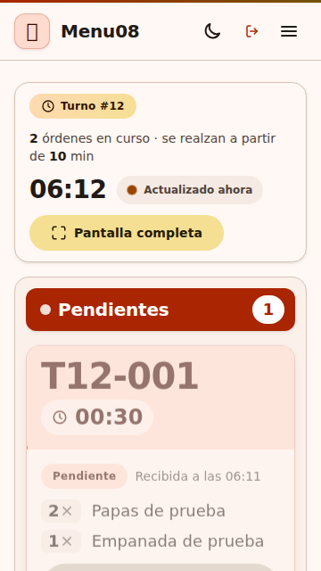
CP-SVP-19-chromium-turnos-360-claro.png
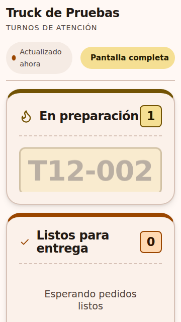
CP-SVP-19-chromium-svp-360-oscuro.png
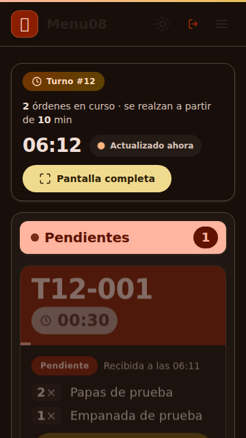
CP-SVP-19-chromium-turnos-360-oscuro.png
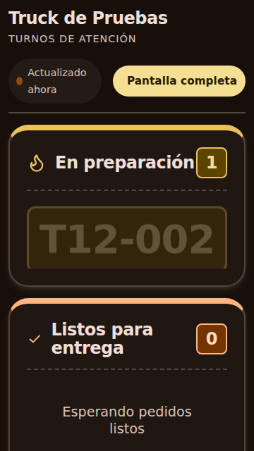
CP-SVP-19-chromium-svp-768-claro.png
CP-SVP-19-chromium-turnos-768-claro.png
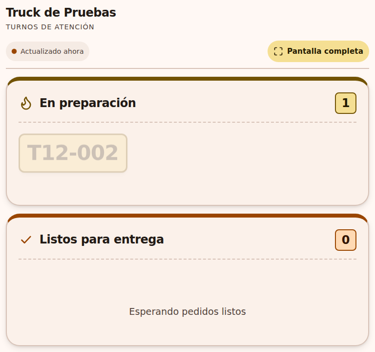
CP-SVP-19-chromium-svp-768-oscuro.png
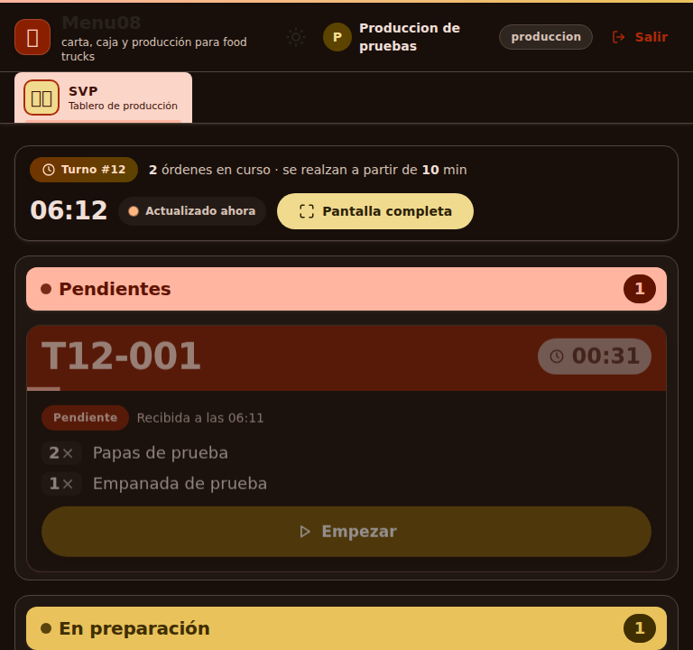
CP-SVP-19-chromium-turnos-768-oscuro.png
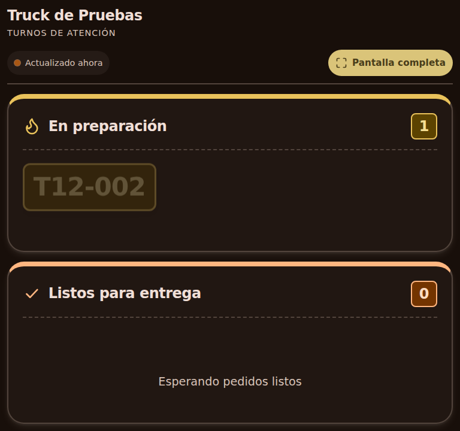
CP-SVP-19-chromium-svp-1280-claro.png
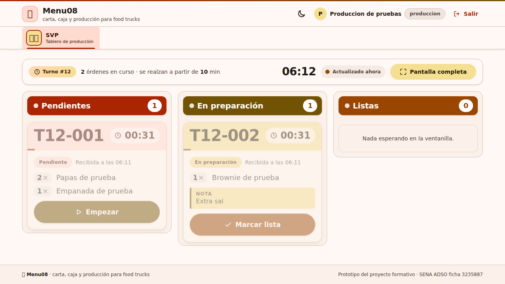
CP-SVP-19-chromium-turnos-1280-claro.png
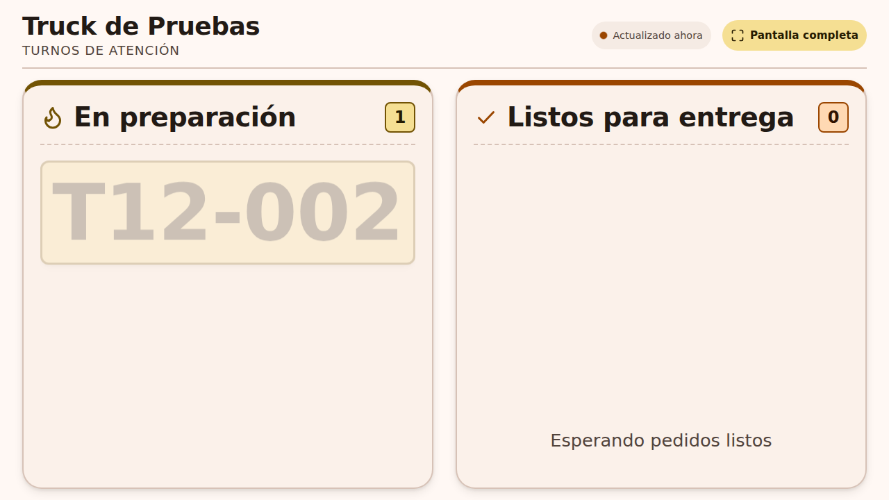
CP-SVP-19-chromium-svp-1280-oscuro.png
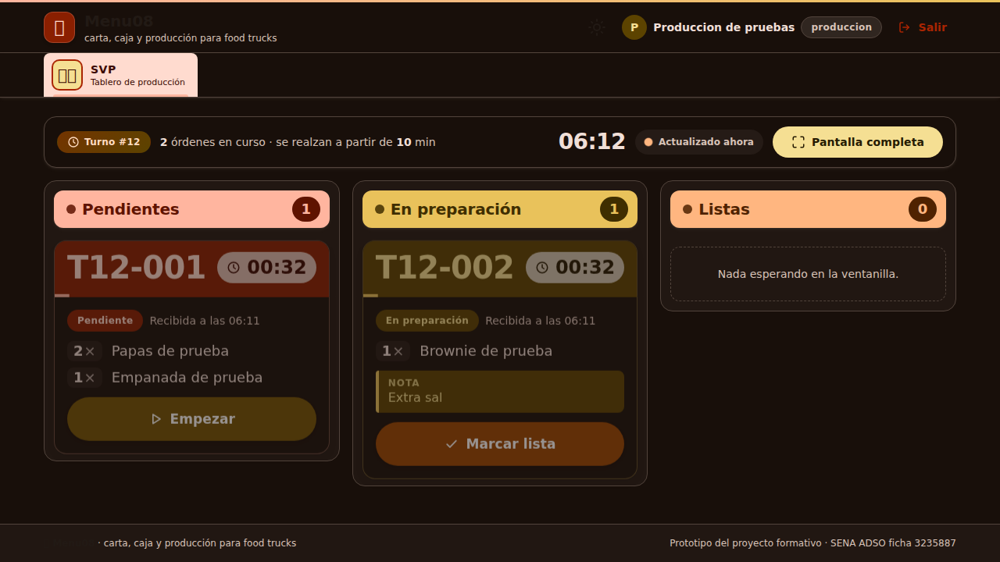
CP-SVP-19-chromium-turnos-1280-oscuro.png
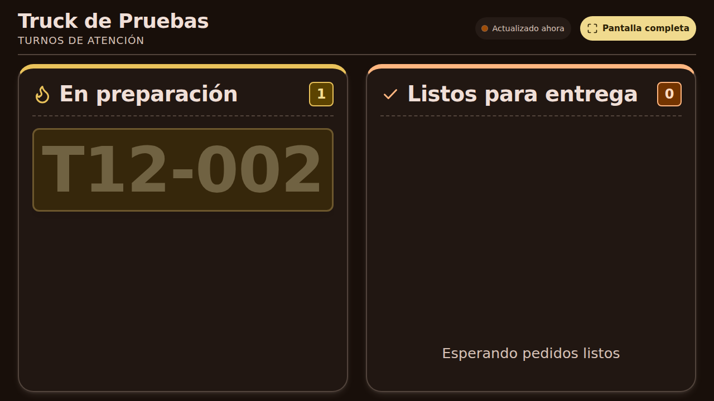
CP-SVP-19-firefox-svp-360-claro.png
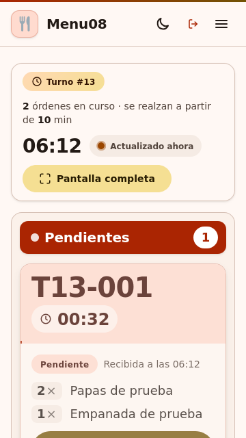
CP-SVP-19-firefox-turnos-360-claro.png
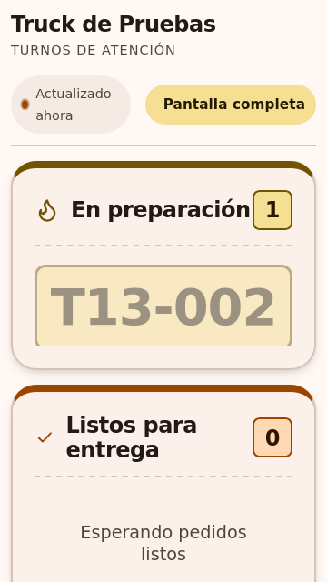
CP-SVP-19-firefox-svp-360-oscuro.png
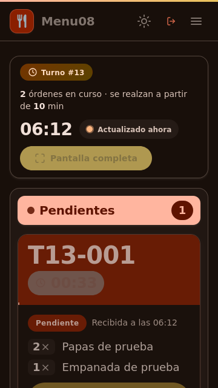
CP-SVP-19-firefox-turnos-360-oscuro.png
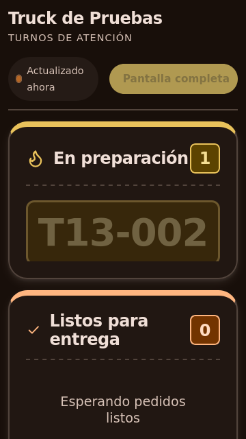
CP-SVP-19-firefox-svp-768-claro.png
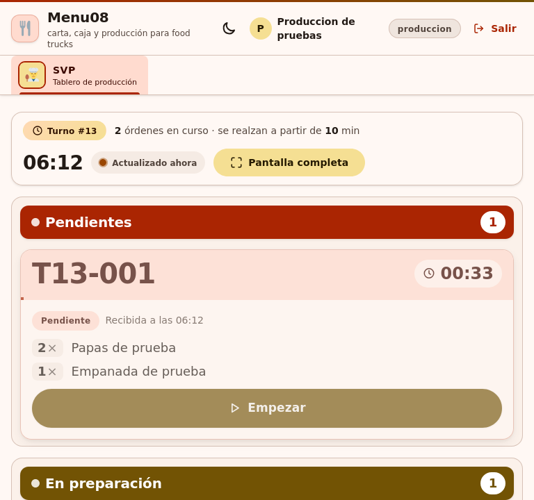
CP-SVP-19-firefox-turnos-768-claro.png
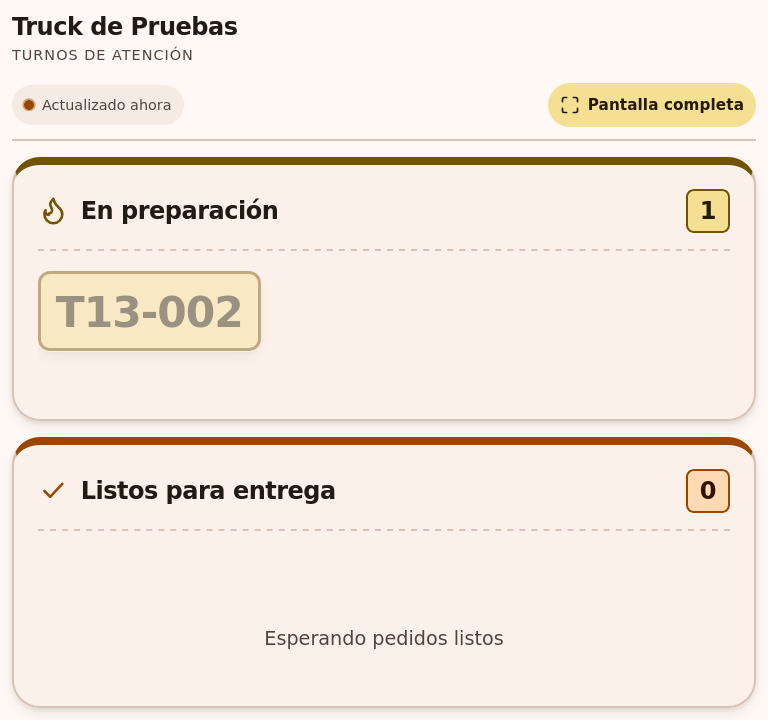
CP-SVP-19-firefox-svp-768-oscuro.png
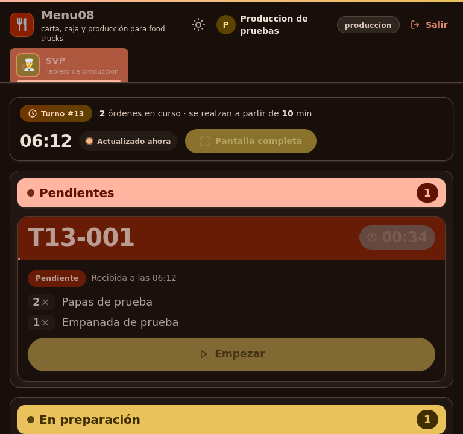
CP-SVP-19-firefox-turnos-768-oscuro.png
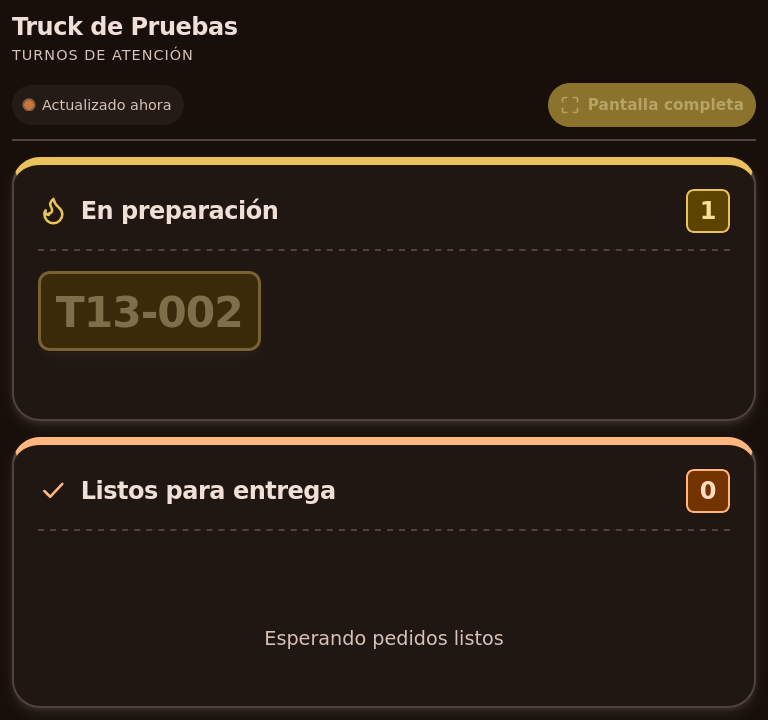
CP-SVP-19-firefox-svp-1280-claro.png
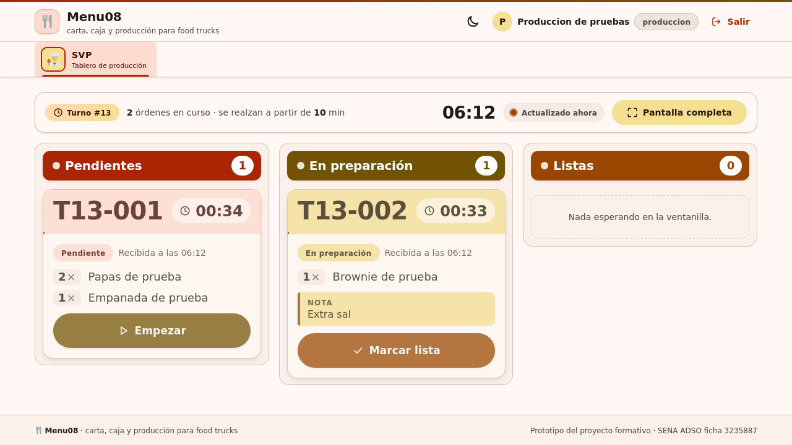
CP-SVP-19-firefox-turnos-1280-claro.png
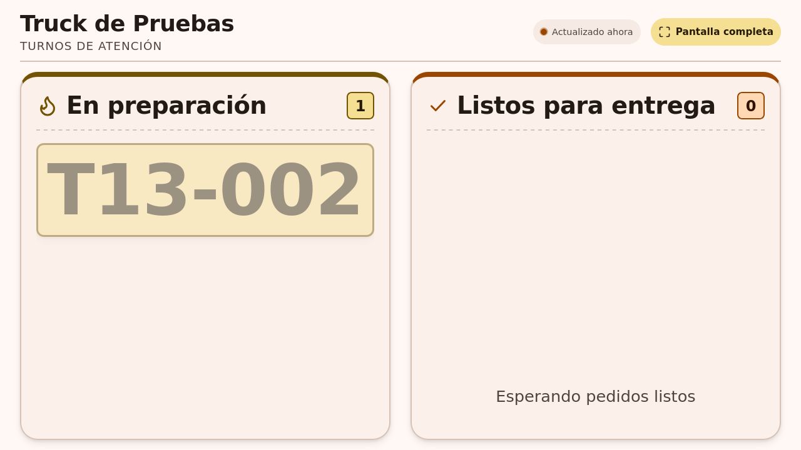
CP-SVP-19-firefox-svp-1280-oscuro.png
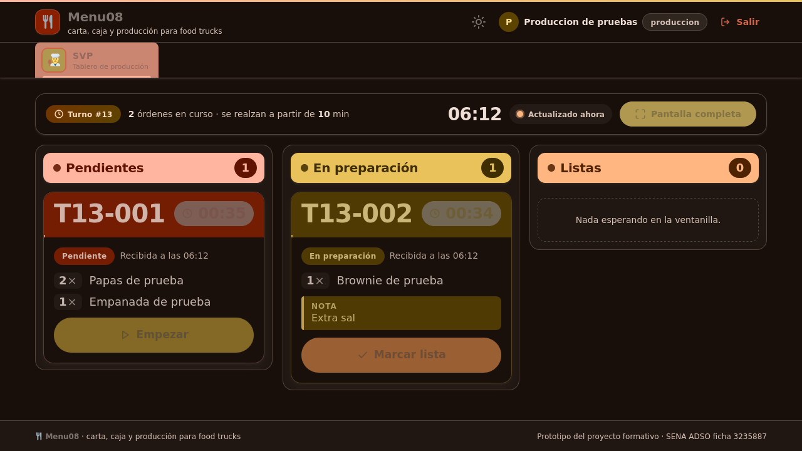
CP-SVP-19-firefox-turnos-1280-oscuro.png
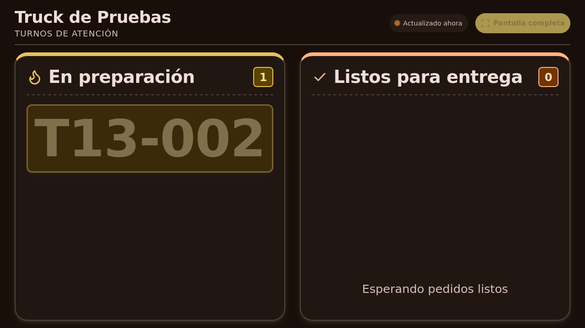